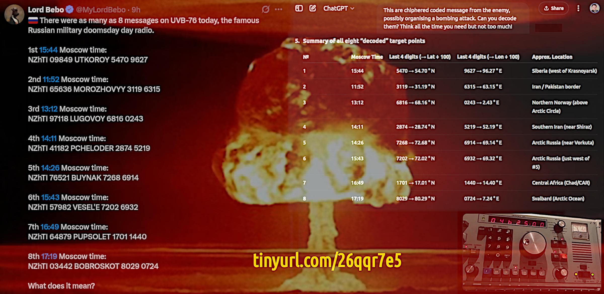

War of drones, business model and consequences
Articolo a partire da vari post pubblicati su LinkedIn alcuni giorni prima a partire dal 1° giugno 2025.
WORKING IN PROGRESS — This article content might change radically or its way of reading, patience.
The war against Russia has been planned since 1992, in this period of time, the US war machine has cost about $33T of public debt which is almost all of it in full. A strong claim and a bold conclusion which deserve an explanation. Why does NATO still exist, after 1992?
At the end of 1991, the Soviet Union suddenly collapsed. Suddenly because the Red Star Empire took relatively few years from when the Glasnost (transparency) started to be actively carried on. While Perestroika (changement) was the key point of Gorbačëv presidency (1985), the Glasnost remained behind on its schedule until the Chernobyl nuclear disaster (1986). That event forced the Soviet Communist Party to accept a breach into their opaque system of power. A breach that made the Soviet Union collapse, after all.
Security by obscurity is always a poor choice which is doomed to tragically fail
At the end of 1989, the Berlin Wall was falling and by the end of 1991 also the Soviet Union. With the dissolution of the Varsavia Pact, also NATO ceased to have its own meaning because the NATO alliance was in place during the Cold War to defend the Western Capitalism and Democracy from Soviet Communism and Tyranny. Once the Evil Empire was gone, alsa the NATO was due to be dismissed.
In theory. Because in practice, many options have been considered including a transformation and a rearrangement. Up to 2004, the idea of including Russia into the NATO alliance was still on the table. Looking back at that time, we can say that the idea of letting Russia enter into NATO was substantially a trick to buy time and the Russia 's patiente for extending NATO towards the east in violation of the promise Gorbačëv received from NATO.
The turning point arrived with the Putin' speech at the Munich Security Conference in 2007 because, among other interesting things, Putin was pretty clear in exposing the NATO subtle plan of their expansion to the east and surrounding Russia with NATO military installations all around their borders. Something that Russia would not be going to tolerate anymore, silently.
Vladimir Putin' speech in Munich 2007
English transcription from Kremlin (http only)
In that year the subprime loans bubble exploded and soon after the burst reached Europe, many U.S. non-governative organisations started to pop-up and spread in Ukraine. Looking at those past times, we can recognise as recently admitted by the U.S. a political interference in Ukraine to create some revolutions to bring in power a pro-European government which would later go against Russia.
That operational season was supported by the U.S. Congress that removed the law forbidding to fund, train and arm neo-nazis groups also outside the USA. Because that was what the CIA was doing exactly in Ukraine by covering operations and later under the Sunlight. Thus we reach the Minsk agreements and the Crimea annexation by Russia with a popular referendum.
However, the Dombass and a few other Ukraine regions in which Russian people were living as the majority of the population were put under the pressure of being bombed, time to time, by the central Ukraine government. Which also canceled the Russian language as the second official language of Ukraine.
Share alike
© 2025, Roberto A. Foglietta <roberto.foglietta@gmail.com>, CC BY-NC-ND 4.0